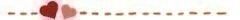

2016/0131Sun自分の力で変える
U23サッカー日本代表優勝おめでとうございます！
ということで！45回目のファンの方が
考えてくださった今日の冒頭あいさつは
マルコメ・アスンソンさんからいただきました！！！
ありがとうございます！

今日は朝からみんなで収録しました！！！
何の収録かはまだ秘密だけど
とーっても楽しくて
たくさん笑った1日でした！！！
それから、純奈と飛鳥ちんと
夢の国に行く約束もしたよー！！！
はやくいけるといいな～
井上さんやみり愛やまたまた飛鳥ちんとも
大きなテーマパークに行く約束もしてて
遊ぶ約束がたくさーん！！！
楽しみ！
春になったら、テーマパークもいいけど
山とか登ったり
丘の上でピクニックしたりしたい！
どこか少し遠くに行って
そこで自転車を借りて知らない道を
走ったり知らない場所を探検したい！
あとね！すごい話しが変わるけど
前までお風呂に入っても
あ～～～癒される～～～
とかなかったけど、
寒いせいか
最近、お風呂がリラックスタイムになってね、
お風呂場の電気を消して
お風呂の中にキャンドルを置きたいな！って
思ってるの！
湯船に浮くキャンドルとかもあるみたいなんだー！！！
今度、探しに行ってくる！
それから家具を調べて見るのにもはまってる！
楽しいよね～♪
みなさんのリラックスタイムとか
何かするのにはまってるとか
あったりしますかー？
＊告知です！！！＊
のぎえいご
↘︎1月31日 23時30分～
CS放送 TBSチャンネル1 放送
クリスマススペシャルの後半戦！！！
テストの回答をみんなで見たり
答え合わせしたりと、みんなの珍回答で
とても面白くなってます！！！笑
本日放送！！！！ 工事中前にみてね！
今日も
きいちゃんにきいちゃおう！

◆なおみちさん◆
◁ところできいちゃんは人と変わった好きな匂いとかある？？
僕はガソリンの匂いが好きです！▶︎変わってるかはわからないけど
新築の匂いと
新品の冷蔵庫の匂いはすき！！！
◆あひょさん◆
◁きいちゃんって二期生にはひなこってよばれてるけど一期生はきいちゃんとひなこどっちがおおいの？～～
▶︎蘭世と絢音とみり愛はきいちゃんって呼ぶよ！
うーん、先輩はきいちゃんが多いけど
日奈子って呼んで下さる先輩もいます♪
北野って呼ぶのはらりんさんと川後さん！
北野でも、日奈子でも、ひなでも、
きいちゃんでも、きんちゃんでも、きーでも、
なんでも嬉しいです♪
◆あずにゃんさん◆
◁女性同士なので（笑）洋服とかメイクとかの話しをしたい！
そういう質問ってしても大丈夫かな？次会えるの4月なんて遠すぎて辛いよー！！！
▶︎いいね～！！！
あんまり詳しくないけど、しよしよ♪
全然大丈夫だよ！！！
遠いいね～
でも、楽しみにしてるよ！
◆かきしゅんさん◆
◁きいちゃんは、ダブルダッチってスポーツ知ってる？？
▶︎知ってます！！！妹が部活でやってるので、よく動画を見せてもらってます！
縄跳びを使ってあんなことをするなんて
本当にすごいですよね！！！
できたらかっこいいんだろうな～♪
◆きぃくんさん◆
◁きいちゃんは普段自転車とか乗る？
僕は散歩が好きだからきいちゃんはどうかなー？って思いました！▶︎自分の自転車は高校3年生から
乗らなくなってから捨てちゃってないから
そんなに乗らないよ～！
妹の自転車をこの間、
半年以上ぶりに乗った！
自転車って久しぶりに乗ると楽しいよね！
一輪車でもよく、遊んでたな～
一輪車したい！
◆ジョナサンさん◆
◁きいちゃんのさりげない動物アイテムを取り入れたファッションが良いですね！
今回はウサギさんでしたね！次は何かな～？(^○^)
▶︎そうなんです！毎回、意識しないでも
動物が必ずファッションの中に入ってるんです！！！びっくり！
だから、これからは意識して
小さくてもどこかしらに動物いれていこうかな！！！
寒いこの時期はペンギンの耳当てが
大活躍！
次はなんだろう～！
◆タッシーさん◆
◁春：イチゴ
夏：スイカ
秋：柿
冬：ミカン
夏：スイカ
秋：柿
冬：ミカン
▶︎断トツで、夏のスイカ！！！
でも、秋の柿もすきなんで！
去年の秋は柿を毎日食べた！っていうくらいの柿を摂取しました！
◆アシタカさん◆
◁きいちゃんちのお風呂の温度は何度ですか？
▶︎42度です！！！
もう少しあつくしたい！！！
今日のきいちゃんにきいちゃおう！は
ここで終わりです♪
またやります٩(◦`꒳´◦)۶♪
さて！ここで！！！
ヒナコセレクト(仮)

■(1) 日村派はめずらしいさん■
⬅︎めっちゃすっきゃねーん
やっぱすっきゃねーん➡︎もしかしてあのメロディーのかな？
聴いたことあるよ！ありがとう！
照れるねん！
■更新日の(131) ねぼすけさん■
⬅︎きぃちゃんはプロ野球のチームでどこを1番応援してますか？？
俺は千葉県民として千葉ロッテマリーンズを応援してます！➡︎どのチームも応援しています！！！
小学生の時、千葉ロッテマリーンズの試合を観に行ったことがあります！！！
初めてのプロ野球観戦で楽しかったな～！
■(175) 山形のKさん■
⬅︎ちゃんのメイドやばい！俺を萌えごろす気かよ、可愛すぎる！！！！！！
➡︎わあ！ありがとう！そんなそんな(ノω；｀)
着なれないから恥ずかしかったけど
今度握手会で着ちゃおうかな～♪
■(200) 石油掘り当てたいさん■
⬅︎かわいいいいいいいいいいい！！！！！！！
元気でる➡︎そんなことないよー！！！！！！！！
でも、嬉しいよー！！！！！！！！！
ありがとうよー！！！！！！！！！
元気注入だあー！！！！！！！！
■(450) やぎらむさん■
⬅︎日奈子ちゃんは無人島に一つだけ持っていけるとしたら何を持って行く？
➡︎えー！選べないからー。。。
四次元ポケット♪
■(717) まさひろさん■
⬅︎きいちゃんのブログが1日の原動力！！！
➡︎そんなことを言ってもらえるなんて
とても嬉しいです！
明日も書くので見てくださいね♪
■(750) ゆーまさん■
⬅︎「一期一会」
出会いは一生に一度。その出会いを大切にしていこうって今日のきいちゃんのブログを読んで改めて思いました！ありがと～➡︎そうですね！！！大切にしていきたいです！大切にしていきます！
みなさんのことが本当に大切で
だいすきです！
■(1000) ともかさん■
⬅︎高校に無事合格しました！
高校生になったら握手会やLIVEに沢山行きます！
高校生になったら握手会やLIVEに沢山行きます！
➡︎おめでとうございます！
それは楽しみです！待ってます♪
是非、きてくださいね～٩(ˊᗜˋ*)و♪
今日のヒナセレはここまでー！！！
次はどなたが、セレクトされるのでしょうか！
わくわくします(｡・・｡)♪
ファンの方が考えてくださった
ブログ締めのあいさつ
38回目はサンクエトリストさんからです！！！
歩いて行こう！日のあたる場所を求めて
2016/01/31 23:25｜個別ページ｜コメント(1239)
2016/0130Satそれじゃ一方的
｢ご存知、北野日奈子でございます！！｣
ということで！44回目のファンの方が
考えてくださった今日の冒頭あいさつは
いとしゅんさんからいただきました！！！
ありがとうございます！

今日は、ビックサイトで
個別握手会でした！！！
13枚目シングルの関東握手会は
今日で最後だったので
１つの区切りとして、
新しい時期に変わるために
就職活動や受験やお勉強やお仕事や
いろいろなことで
握手会に暫く来れなくなってしまう方や
今日でもう最後。
という方がいつもよりたくさん
いらっしゃった気がします。。。
今日で最後の方や
暫く会えなくなってしまう方とは
みんなそれぞれ自分の進む道や
いろいろな理由があるけど、、、
でも！
いつかまた会える時まで
努力して感謝して
今日よりもずーーっと成長した姿を
見せられるように頑張ります！
今日もたくさんの方が会いに来てくださり
本当に嬉しかったです！！！
やっぱり、握手会って楽しい♪
今日のお洋服は
このあと載せていくね～！！！
1.2部！！！
不思議の国のアリスに出てくる
白うさぎ風だよ～♪
今日はここで！！！
きいちゃんにきいちゃおう！

◆いおずくさん◆
◁欅坂の美波ちゃんがペンギンを育てるアプリをやってるらしいんだけど、きいちゃんはやってますか？
▶︎へえーーー！！！そんなのあるんだ！！！
気になる！探してみます♪
◆ハーデスさん◆
◁きぃちゃんは幕張メッセはよく来るけど、ららぽーと船橋は行ったことありますか？
▶︎生駒さんがAKBさんの総選挙に出るのに
みんなでティッシュ配りをしたときに
行きました～♪
ティッシュ配りのあとに
アイスたべたんだ～♪
◆イーグルドライバーさん◆
◁北野家が作るオニギリは丸型？それとも三角？
▶︎北野家は三角の時と丸型の時がある！
日奈子がやるといびつになる！
一生懸命、三角にしようとすると
お米が固くなる！
◆さかもちさん◆
◁のりはスティックノリ派？水ノリ派ですか？
僕はスティックノリ派です！笑
僕はスティックノリ派です！笑
▶︎スティックノリ派！
でも、テープのりを1番使ってたよ！！！
◆かわちゃんさん◆
◁握手行きました！
楽しかったです！羊の鳴き声は『メェ～』だと思うけどヤギは『ヤー』ではないと思うな笑笑
▶︎ありがとうございます♪
いや！！！そんなこともないかもよ？！！！
ヤーってなくヤギもいるかもしれないじゃん！！！
羊でメーって鳴いて真似したら
ヤギは変えなきゃ！！！と思ったんだもん！！
◆らいすさん◆
◁カレーは辛口派？甘口派？どちらですか？よかったら答えて欲しいです。
▶︎甘いのよりは辛いの派です！
最近、食べ物の好みが変わったの！
前は辛いカレーたべれなかったのに
今は甘いカレーの方が食べられない！
おっとな～♪
◆てつさん◆
◁らりんさんがラジオで、メンバーの中でもし付き合うならと訊かれ、きいちゃんって言ってたよ！
きいちゃんなら誰と付き合う？▶︎めっちゃ嬉しいです♡
有り難き幸せ。
もちろん！
らりさん♡
らりさん♡らりさーん♡
好き度がどんどん増していきます！
だーいーすーきーです！！
らーりーんーさーんー！！！
今日のきいちゃんにきいちゃおう！は
これにておわりー！！！
また今度やるね！！！
3部！！
ベレー帽にワンピース！
髪型は
編み込み三つ編み！！！
毛先が外にはねててお気に入り♪
そして！！！
今日はどなたかな？！♪
ヒナコセレクト(仮)

■(1) つっちーさん■
⬅︎よお！
➡︎よおっ！いっちばーん！！！だね！
■更新日の(130) らーぴんさん■
⬅︎時計が届いたよ
目覚まし時計だから音が大きくてこれに起こされるのはかなり恥ずかしい笑➡︎へへへ～(｡・・｡)♪
録音するのも恥ずかしかったんだよ～！
他のメンバーよりもちょっと
声が大きすぎたかも。。。
でも！これで寝坊しないはず！
■(175) 太陽ノックアウトさん■
⬅︎きいちゃんは俺より年上だけど、俺から見ても後輩感ありますよ（笑）
➡︎部活をやっていた頃から
後輩と接するより先輩と接する方が
楽しかったから
どうしても、そういう雰囲気が出るのかも！笑
先輩っぽく、
お姉さんみたいな感じができないの！
お兄ちゃんがいて日奈子は妹だし！
妹もいるから日奈子はお姉ちゃんでもあるんだけどね！！！
■(200) たうぇいさん■
⬅︎きいちゃんにきいちゃおう！のいい略し方がワカラナイヨ...
➡︎略し方わからないね。。。
なにがいいんだろう！！！
何か皆さんに案を出してもらおう！！！
■(450) ♯46さん■
⬅︎おれは中高バスケ部だったけど
きぃちゃんはスポーツ好き？もし好きなら観るのと自分がプレーするのどっちがいい？
➡︎スポーツ好きだよ！
私は小学校と中学校でバスケやってた！
うーん、見るのも好きだけど
見てるとやりたくてうずうずするから
やる方が好きかな！！！
■(717) どんちゃんさん■
⬅︎僕の部屋ベッドのちょうど真正面に鏡があるので、寝ようとするといつも真っ暗な中鏡を見てしまいます、、。怖いです。どうすれば良いですか？
➡︎鏡を裏返しにするか
鏡を布でおおったりしたらいいんじゃないかな♪
遠征先のホテルで
ベットの前が鏡のときはよく
タオルとかで隠して寝てるよ！
■(750) STARさん■
⬅︎きいちゃんは休日1人で出掛けたりしますか^o^⁇
➡︎平日で休日の日は
夜ご飯の材料買いに行ったり
ふらふらとすることはあるけど
土日のお休みの日は
1人ではお出かけとかしないかな～♪
■(1000) 翔太さん■
⬅︎前のブログで名古屋と京都で天使と悪魔を
一人でって書いてたけど、飛鳥ちゃんはやらないのー？
➡︎この間、飛鳥ちんとやったから
今回は1人でやる予定だよ～！！！
■(1175) ぴあのさん■
⬅︎ブログ毎日更新を続けるのすごいと思う！これからも頑張ってね！
ブログあしたも楽しみにしとくね！➡︎そんなそんな(ノω；｀)
ありがとうございます！！！
うん！！明日も書くよ♪
今日のヒナセレはここまで！！！
またやるよ～♪
次は誰だろう～♪
メイドさん！！！
未央奈さん 真夏さん 日奈子さん
ファンの方が考えてくださった
ブログ締めのあいさつ
37回目は棚からよもぎ餅さんからです！！！
Did you have fully enjoyed yourselves today.
Hope to see you again, thank you very much!!2016/01/30 23:55｜個別ページ｜コメント(1174)
2016/0129Friガーベラ少女
ハロー、みなさん！
ということで！43回目のファンの方が
考えてくださった今日の冒頭あいさつは
やなぎんさんからいただきました！！！
ハローってあんまり言わないから新鮮！笑

今日は、
サイン会のイベントでした！！！
お足元の悪い中、サイン会にきてくださり
ありがとうございました！！！
普段は、生写真やポスターにサインをするので
今日はいろいろな物にサインができて
楽しかったです！！！
特典イベントは
特別感がありわくわくしますね！！！
今日はありがとうございました！
いきなりですが！
告知です！！！
BUBKAさん
↘︎1月30日 発売！！！
あした発売のBUBKAさんにて、
みさ先輩と2人きりで取材してもらいました♡
何度か、このブログでも写真が出ていますが
みさ先輩とバッティングセンターにいきました！！！
私は今日、あした発売のBUBKAさんを
頂いたのですが
自分でも驚くぐらいの後輩感！！！
そしてみさ先輩の優しくて可愛くて綺麗な先輩感が、誌面から溢れ出していました！
写真からはもちろん
インタビューはたっぷりの読み応えで
みさ先輩と私の関係もわかると思います♪
是非！皆さん BUBKAさん見てください♪

唇を噛む
今日も！
きいちゃんにきいちゃおう！

◆ヨーグルトさん◆
◁お仕事がなんにもなくてほかの予定もない時っていつも通りの時間に起きる？おれ、そういう時昼まで寝ちゃう笑
▶︎自然に目が覚めるタイミングになるまで
起きない！！！自然に目が覚めたら、どんなに朝でももう起きちゃうよ！！！
大抵、お昼になるけどね～(´ｰ∀ｰ`)♪
◆ばたさん◆
◁きいきい（きいちゃんにきいちゃおう、を略してみました。どうでしょう。）
▶︎すごい、覚えやすいけど、
なんか、鳥が鳴いてるみたい！！！笑
きいきいって！！！
◆こまち「野」さん◆
◁きいちゃんが1番好きな乃木坂の制服は
どの制作期間のやつ？▶︎7枚目のと、11枚目！
◆ケイさん◆
◁日奈子ちゃんはペンギンが好きなんですか？
▶︎最近すきです！
写真撮る時もペンギンの真似したりする！
お気に入り！ペンギン！
◆カズさん◆
◁この間 静電気が１日に３回もきた話を親に言ったら、静電気がくる人は疲れてるからだって言ってたよ！(笑)きいちゃんは静電気大丈夫？
▶︎バチバチっとは、あまりならないけど
静電気で髪の毛が宙に浮いたり
顔にへばりついたりはする！
メイクさんと静電気のはなししてたら
花奈さんに敵う子はいない！って言ってた！
◆げすぱさん◆
◁握手会で着る服なんだけど、落語家さんが着てる着物の衣装とかどうだろう？久しぶりにじょしらくみたいなぁ
▶︎そうなんだよね～、
じょしらくの時のきぐちゃんを握手会でやりたいんだけど、髪の毛も着物も衣装だったからないんだよね。。。
でも、いつかやりたいな！
◆よしさん◆
◁オリラジの二人がきいちゃんのイントネーションちょっと違う気がするんだけどそんなことない？笑
▶︎確かに！思い返してみたら！
でも、藤森さん中田さんのきいちゃんは
なんだかとてもワクワクするというか
呼ばれただけで楽しくなるので
今のままがいいですね٩(◦`꒳´◦)۶♪
◆けんさん◆
◁乃木坂メンバーにきいちゃんより腕相撲強い人は何人いますか？
▶︎私が思うに
5人はいるかな。。。。笑
今日のきいちゃんにきいちゃおう！は
これにておわり！
またあしたやります！
髪の毛が赤く見える加工

赤毛のヒナ
ヒナコセレクト(仮)

■(1) バギーさん■
⬅︎きいちゃん
ブログ更新ありがとう！明後日は握手会だね！
行くからよろしくね！
➡︎いいえ٩(ˊᗜˋ*)و握手会だね～！
待ってるよ(｡>ω<｡)♪
■更新日の(129) ゆっかさん■
⬅︎毎日お風呂からあがって見るのが日課になってるよ✌️
明後日の握手会もなにか着てほしいな～！13thの関東最後だし\(＾＾)/朝から行くから待っててねo(^▽^)o➡︎毎日読んでくれてありがとう♡
そうだね！関東最後だ！明日が終わると、また暫く関東ではないのか～。。。
うん！まってるよ！！！
■(175) おひささん■
⬅︎きいちゃん髪伸びたね!!
正直、このまま伸ばしていって欲しいなーセーラ服とポニテ見たい♪♪
➡︎のびたよー！！！いまは、切る予定ないけど突然切るかも！
4月までのばしてらるかな～。。。
■(200) 絵飛みのカズキさん■
⬅︎きいちゃんと握手したら骨折するという危険性はありますか？（笑）
➡︎なきにしもあらず。。。
って！！！そんなわけないじゃん！！！
骨折なんてしないよ！笑
優しいもんね(｀・Д・´)！
■(450) たなか。さん■
⬅︎おすすめの作家さんですが、
僕は伊坂幸太郎さんがすきです！読みやすいし、伏線回収がとてもすっきりします！
➡︎伊坂幸太郎さん！！！
重力ピエロは映画で少し見たことがあります！
オーデュボンの祈りっていうのが、気になります！是非、読んでみます！
■(717) 西野けーたさん■
⬅︎完売おめでとう～～（＾ω＾）
ブログとか色々日々の努力の成果が報われたんだね！最近、ブログとか見てても、飽きさせないような工夫が凄いし見てるこっちも楽しくなるよー！
➡︎ありがとうございます(ノ_・。)！！！
いやいや。。。みなさんのおかげです、本当に。。。
そんなそんな！自分で楽しんでやってるだけだよ！！！こんな私の勝手に、毎日コメントしてくださる方や応援してくださる方がいて
本当に幸せです！
■(750) なっちゃんさん■
⬅︎最近勉強が、全然追いつかないけど、どうすればいいかな？
➡︎焦らずに、わからないところがあったら先延ばしにしないで
1つ1つ問題にあったっていけば
ちゃんと理解できるよ！！！
応援してます！頑張ってください！
■(1000) こんこんさん■
⬅︎最近日々の生活に気合いが入りません。闘魂注入してください！
また、きぃちゃんはどうやってやる気スイッチ入れてますか？➡︎1日1日を大切に思えば、
何か気合いが入らない日でも
モヤモヤして日でも
きっと晴れた気持ちになれると思います！
この時はいましかないから
大切にしたい！もっとできることがたくさんある！って思えると思います！
でも、力を抜いてのびのびと
思うがままに過ごす日も大事だと思います！
■(1175) るなたそさん■
⬅︎2月14日に看護師の国家試験があるんだけど
なかなか集中できなくて勉強がはかどりません（ ; ; ）
きいちゃんは集中するときにコツ？とかって
ありますか（ ; ; ）？
きいちゃんパワーが欲しいです（ ; ; ）
➡︎何時間もずーっと集中し続けるのは体力的にも気持ち的にも大変だと思うから
何時から何時までは、携帯をおいて一人きりで集中！とか
この問題を解き終わるまではシャーペンをおかない！とか
自分の中で区切りをつくったら
きっと今よりも集中できると思います！
大事な試験頑張って下さい！応援しています！
■(1200) ノビカースケさん■
⬅︎みおなさんときいちゃんの共通点はどこですか？食べるのが好きなところとかですか？？？
➡︎似ているようで似ていない
似てないようで似ている
未央奈とはそんなかんじです！
どこが似ている！なんてあげていったら
キリがないけど
どこが似てない！なんてあげていっても
キリがないと思います！
そーですね！まずは、食べるのがすき！は似ている方に入ってますね！！！
昨日載せわすれてしまいました。。。すみません。。。
■(1175) ひめちゅんさん■
⬅︎きいちゃんが今までやったダイエットで、一番効果があったダイエットを教えてください！
➡︎うーん、甘いの食べすぎない！！！
いま、毎日甘いの食べ続けて
3ヶ月以上たつから、
やばいです。。。
今日のヒナセレは、ここまでー！！！
次は、どなたがセレクトされるのか♪
またあしたー！！！！

ひなこといおりとざきち
ファンの方が考えてくださった
ブログ締めのあいさつ
36回目はもとたださんからです！！！
とんたん」
→結局行けましたか？（笑）
→結局行けましたか？（笑）
小声でですが、、、
まだ行けてません。。。
2016/01/29 23:50｜個別ページ｜コメント(1286)
2016/0128Thu気にしてないわけじ ゃない
みなさまこんばんは(｡・・｡)
日奈子だよー٩(◦`꒳´◦)۶♪
今日は、冒頭あいさつと
終わりの挨拶を選ぶ時間がなくて
選べませんでした。。。
すみません(ノ_・。)
明日からまたやります！！！

今日は川後さんとになと3人で
FLASHスペシャルさんの
撮影がありました！！！
乃木坂の陽菜・日奈・日奈子で
撮影！！！
"ひな"といえば！！！
そうです！あれです！
可愛い私服っぽい衣装をきて
公園に行ったり
あれっぽい衣装を着て畳のお部屋で
撮影したりと
とても楽しかったです♪
発売は2月26日です！！！
楽しみにしていてください♪
それから！！！
14枚目シングルの個別握手会が
こんなに早い段階から3部も完売に
なったことをききました！！
すごく驚いて
嬉しくてついつい「3」ってやって
笑ってる写真をメールで送っちゃった♪笑
本当にありがとうございます！
全会場4部制ということで
こんなに多い部数は今までなかったし
前の握手会を思い出すと辛かったことも
泣き出しそうになったこともあったけど
今は皆さんが会いに来てくださると思うと
まだまだ先の握手会のことを思い描いて
♪なにを着よう～♪どんな髪型にしよう～
ってたくさんたくさん考えちゃいます！！！
正直、まだまだ先はあるし
私の力が足りてないところもたくさんあって
不安だけど、
皆さんと直接触れ合えて気持ちを伝えられる
握手会という大切な場所を
もっともっと幸せに楽しんでもらえるように
がんばります！！！
14枚目の個別握手会で今の所
着る予定の物をざっとかきます！！！
4月17日 in幕張メッセ
⬇︎ セーラー服
4月30日 inポートメッセなごや
⬇︎ 天使or悪魔
5月5日 in京都パルスプラザ
⬇︎ 天使or悪魔
5月15日 in東京ビックサイト
⬇︎ バスケットユニフォーム
です！！！たくさん部数があるので
皆さんのご要望にたくさんこたえたい！
と思ってるので
着て欲しい洋服ややってほしい髪型など
ぜひ教えてください！！！
握手会のあとの
エア握手会風の写真
いつのまにか載せなくなってた！！！
待ってます٩(◦`꒳´◦)۶♪
今までヒナコセレクト(仮)
という名前だったコーナーを
前まで質問返しをしていたコーナーの
きいちゃんにきいちゃおう！
という名前のコーナーにします！
ということで！いきなりですが！
きいちゃんにきいちゃおう！

◆はやぶささん◆
◁突然だけど北海道でしかやらない遊び、大根抜きってわかる？
▶︎大根抜きって北海道でしかやらないの？！！小学校の時やってたよ！担任の先生に教えてもらって！もしかして、担任の先生、北海道出身だったのかもしれない！！！
◆きなこ 永遠のまいみんさん◆
◁トムとジェリーならどっち推し？
▶︎トム！！！だって、いつもジェリーが勝っちゃうでしょ？
だから、いつか公平になるように
トムを応援する！
仲良く終わることもあるんだけどね！！！
◆ダダダダーンさん◆
◁ヒナセレ...きいちゃんはきいちゃんの個人PV(ペアPV)の中でどれが一番オススメ？
あと、メンバー全員の中で一番のお気に入りの個人PV(ペアPV)は何？▶︎どれも、お気に入りです♪
9枚目の初めての個人PVでは
ゲームみたいになってて面白いし
10枚目のドラゴン剣は
素の私が所々で見えるし
11枚目のまあやさんとのペアPVは
2人の生態が見えて、
みんな違ってみんな良いって思うし
12枚目の未央奈とのPVは
堀北コンビの関係がみえたり
じょしらくの舞台稽古真っ最中の撮影で
マイクついてるのに声が張り気味で
緊張して力んでる日奈子がクスクスっとなるし
13枚目のキタノがキタノ ヒナコはコナイは
新しい自分を表現できてるんじゃないかな！と思うし
全部全部オススメです(｡・・｡)♪
ちなみに、他のメンバーですきなPVは
個人PVだとみなみさんの
お願い！マイ☆ハートで
ペアPVだとみり愛と絢音の
時空超越アイドル イマガールがすき！
◆タクマさん◆
◁僕は来年就職で動物関係の仕事に就こうと思っています！！！きぃちゃんは動物の番組とか見ますか？
▶︎いいですね！素敵です！
動物の番組はよくみます！！！
笑ったり癒されたり泣いたり
勉強ですね！！！
◆ナエトルこうすけさん◆
◁金縛りにあったことありますか？
▶︎あります！！！よくなります！！！
でも、金縛りって疲れちゃうから
嫌な時はなる直前で防御したり
なってもすぐにとけるように
してます！！！
◆ヒビナさん◆
◁きいちゃんはコーヒー飲める？飲めるなら飲みやすい
コーヒー教えて！
コーヒー教えて！
▶︎あまり苦いのは飲めない！！！
MAXコーヒーは甘くて飲みやすいよ！
◆ひーさん◆
◁ブログ毎日書いてるから、だいぶブログ書くの早いと思うけど、何分ぐらいかかってんの？
▶︎うーん、朝起きて携帯開いてから
ブログ送るギリギリまで１日を使って
書いて保存書いて保存を繰り返してるから
どのくらいかかってるかわからない！！！
◆メガシャキさん◆
◁新幹線とか飛行機のリクライニングは倒す？それとも倒さない？
▶︎たおす！！！
後ろの人に断ってからね！！！
◆ぐっちゃんさん◆
◁きぃちゃんはホラー映画とかは見ますか？
▶︎みますよ！！！ホラー映画もホラー映像も！
でも、最近みてないな～
おやすみの日に借りに行こうかな！
◆まさっぴさん◆
◁きぃちゃんはチップと散歩とかする？？
なんかね、うまく散歩するコツがあるんだって！！！何だと思う？？(￣▽￣)ﾆﾔﾘｯ
それは、｢散歩中はワンちゃんと目を合わさずに前を向いて歩く｣です！！
▶︎お散歩いくよ～！
今日もお仕事終わってお家に着いたあと
お母さんとチップと3人で行ってきたよ！
へー！！そうなんだ！！！
でも、日奈子は散歩中いつも
チップが可愛すぎてついつい名前呼んで
振り向かせたくなるの！！！
だから、チップって呼んで
振り向くとより一層幸せな気持ちに
なれるからオススメだよ！
◆ヒロ氏さん◆
◁きいちゃんはお寿司屋さん行ったら何から頼む？
自分は絶対サーモン！▶︎まぐろ！！！
休憩がてらに！
今日ね！
ポニーテールしてみたの！
じゃんっ！！！
ほらっ！！！
握手会でも、今度するね！
「セレクトする番号について！」
◆だーいきさん◆
▶︎候補！
◆あしゅきい。ひかるさん◆
◁222番の人とかは？どう？乃木坂の誕生日！！
▶︎候補！！！
◆つよぽんさん◆
◁ヒナセレに選ぶコメ番は乃木坂46にちなんで46番とかはどうかな？
▶︎候補！
◆トシさん◆
◁ブログ更新お疲れ様！必ず返すコメント番号821番はどう？乃木坂の結成日で！
▶︎候補！
◆鹿さん◆
◁1月28日なら129
12月25日なら1225ととか！
12月25日なら1225ととか！
▶︎候補！
◆名古屋のくまモンさん◆
◁あとは717番目とか？
▶︎候補！
えーっとじゃあ！
＊「175」(ひなこ)が1番多かったので
「175」番目のコメント。
(例) 175、1175....
＊「更新日の月と日にちをくっつけた数字」
(例) 今日だと1月28日だから
「128」番目のコメント。
128、1128
二桁の月になったら、
また考えます！
＊「717」(私の誕生日)番目のコメント
(例) 717、1717
717は少ないからレアだね！
ここからは私からの案で、、、
＊「1」番目のコメントの方！
＊「1000」番目のコメントの方！
＊「200」 「450」 「750」
「1200」など、、、、
200、450、750が続く
コメントの方！
です！！！どうでしょうか！
意義あり！の方は
教えてください！
今日はこの番号の方を
セレクトします！
それで！！！
このコメント番号が一致した
コメントをセレクトするコーナーを
ヒナコセレクト(仮)
という名前にします！！！
ややこいですが、、、
よろしくお願いします。。。
ということで！！！
ヒナコセレクト(仮)

■(175) 両端さん■
⬅︎好きな鍋の味教えてください～
僕の予想はトマト鍋とかかなぁ？➡︎トマト鍋たべたことない！！！
うーん、迷うけど～
豆乳鍋すき！！！
■更新日の(128) だっちゃんさん■
⬅︎声で言ったらきいちゃんも変声してくれる？
➡︎変声でやって！！！って言ってくれたら
全然やりますよ٩(◦`꒳´◦)۶♪笑
■(717) アリエンティさん■
⬅︎きいちゃんってほんとにチップの事好きなんですね！！
どーしたらそんなに犬の事好きになれるんですか？？➡︎本当にだいすきです！
自分の好きなものだから、よくわからないけど
人でも動物でも物に対しても、
相手のいいところをみつけたり
たくさん相手を思えば好きになりますよ！
興味があるものって自然と好きになるし！
何にでも興味を持つことが大事！
■(1) たかまさ@エンジユニさん■
⬅︎すき
➡︎わお！ストレート！！！
嬉しいです！ありがとうございます！
■(1000) せーだいさん■
⬅︎きいちゃんが本を読むと聞いて...きいちゃんが好きな作家さんを教えてください。
➡︎この方が特に好き！というのがまだなくて、、、だからたくさん読んで
好きな作家さんを探そうかなって♪
オススメの作家さんを教えてください！
■(200) じろちゃんさん■
⬅︎やっほーきいたん✋
ペンギン耳当ての名前決めてあげる！！うーん
➡︎なになに～♪
ってなんやねんっ！！！
■(450) もりもりこたけさん■
⬅︎きぃちゃんこんばんわ～初コメントです！！
今受験生なんですけどー、勉強で疲れた時に短時間でできるリラックス方法って何かありますかー？是非教えてください～！
➡︎チョコレートは疲れをとってくれるみたいでいいらしいですよ～！
勉強大変だけど
頑張ってね！
■(750) 白うさぎさん■
⬅︎福岡は雪が凄すぎて私の家の水道管が破裂したんですけど
やっぱり北海道はちゃんと破裂しないような水道管なんですか？➡︎大変ですね。。。
どうなんだろう！わからない！！！
お父さんお母さんに聞いてみるね！
またどこかで答えます！
いま、お風呂中だから聞けないの！
■(1200) 匿名さん■
⬅︎私、お刺身が苦手で食べられないんだけど、どうしたら克服できる？
➡︎苦手なものは苦手意識を持たない方がいいと思うから、徐々になれていって
お刺身だけじゃなくて、お刺身を何かと工夫して食べなれたらきっと大丈夫！！！
今日のヒナセレはこれにておわり！！！
またあしたね！！！
今日はここで、おわりです！！！
おやすみなさーい(ノ_・。)♪
2016/01/28 23:56｜個別ページ｜コメント(1379)
2016/0127Wed勝手な決めつけ
サッカー日本代表、オリンピック出場決定！
おめでとうございます！
おめでとうございます！
ということで！42回目のファンの方が
考えてくださった今日の冒頭あいさつは
はしもさんからいただきました！！！
ありがとうございます！！！

今日はまいちゅんとsmartさんの
撮影でした！！！
男性に着て欲しいファッションや
一問一答にいくつか答えたり
皆さんの参考になれるように
頑張りました！！！
ぜひ、見てください♪
今日撮影できたお洋服を
スタイリストさんに頂いたので
14枚目の握手会のどこかで着ようかな～
その時に、私が男性に着て欲しいファッション風にしてきてくれたりしたら
面白そう(｡・・｡)♪
って、取材してもらってる時に
思いました！！！
2月24日発売です！！！
そういえば、まいちゅんと2人で撮影は初めてだった！
明日は川後さんと、にな(ひなちま)と
3人で撮影です！！！
たのしみ！このメンバーも初めて！
また、撮影がおわったら
報告します！！！
皆さんに話したいお知らせがたくさんあって
とても嬉しく幸せです！！！
今日は文字だらけのブログで
読みづらいかもしれませんが
最後までお付き合いください！！！
悲しみの忘れ方のMV衣装！

きょうもここで！！！
ヒナコセレクト(仮)

◆まるちゃんさん◆
◁きいちゃんは湯たんぽ使ってる？
最近寒くて使いはじめました～▶︎3年前くらい前の冬にインフルエンザになったときに、使ってから今日までずっと使ってないや～！！！
チップをベットの上に乗せて、
一緒に寝てるからあったかいの～♪
◆たいきさん◆
◁バスケのポジションはどこでやってました？笑
きいちゃん力強いからPFとかかなー（￣+ー￣）▶︎フォワードだったよ！！！
自分のゴールに向かって右側のフォワード！！！
◆@乃木坂箱推しなおまる@さん◆
◁質問なんだけど、メンバーのサインとかってもってるの？？
おれもきいちゃんの直筆サインとか当たりたい(>_<)▶︎持ってるよ～！全員のはもってないけど！
ポラとかモバイルグッツの物とかの！
ちなみに、いつかのライブで投げ忘れてしまった寺田氏のサインボールもある！！！笑
◆えーせいさん◆
◁ちなみに神様って信じてる？
▶︎もちろん！！！信じてるよ！！！
◆だくおさん◆
◁きいちゃん小さいの頃食べれなかったけど最近たべれるようになったものある⁇
▶︎お豆腐、きのこ類、なす、冷やし中華！
◆西野けーたさん◆
◁日奈子が仮に犬になるとしたら
何の犬種がいい？▶︎雑種！！！かわいいから！すき！
◆まいぱるさん◆
◁質問です。携帯とリモコン間違える人をどう思いますか？
▶︎私も中学生の時に、筆箱とエアコンのリモコンを間違えたし、
コンパスが入ってるケースと
部屋の電気のリモコン間違えたことあるから
携帯とリモコンを間違えてしまうのも
アリだと思います。笑
◆Koさん◆
◁きいちゃんは自動販売機にココアとコンポタージュ売ってたらどっち買う？
僕はココアを買います！▶︎私もココアを買うと思います！
でもその前に甘口のものを食べたり飲んだりしてたら、もしかしたらコンポタかも！
自販機でコンポタ買ったことは2回しかない！
◆かんたむさん◆
◁パンであんぱん、しろあんぱん、うぐいすぱん、
どのあんが好きですか？▶︎しろあんぱん！！！
◆たくまろさん◆
◁質問です！焼肉とお寿司なら今どっちに行きたい？？
▶︎今の気分はお寿司！！！
◆キットカットカッターさん◆
◁1番お泊まりしたいメンバーは誰ですかー？
▶︎今はー！
飛鳥ちんと姫ちゃんとらりんさん！！！
◆しんたろーさん◆
◁きいちゃん普段バッティングセンターとか行くの！？
▶︎行かないです！！！でも、この間みさ先輩と行ったときにすごく楽しかったから、
今度お休みの日にいこうかなー♪
◆JYUKIさん◆
◁きいちゃんは笑うと両方の頬っぺたにエクボが出来ますよね？
▶︎できます！！！
◆もとけいさん◆
◁日奈子はいま一番行きたい遊園地ある？？？
俺はねー、富士急に行きたいんだ！▶︎んーとね、USJ！！！
富士急も行きたいけど、怖すぎていろいろ乗れなさそう！
◆らふぃーさん◆
◁自分も来年成人式なんだけど、男の人の格好は袴とスーツどっちがいいと思う？
▶︎うーん、スーツもいいけど
スーツはいつでも着れる！
袴は着る機会あまりないから
成人式は特別な日だし袴の方が特別感ある気がする！
◆うえむーさん◆
◁鍋の具材は何が好きですか?？
▶︎玉ねぎ！あとはまいたけとかしいたけとか！
お肉も好き！

休憩がてらに一枚！！

すっぴんで
目の下のくまちゃんがひどい。。。
ペンギン耳当て♪
名前つけようかな～
◆かまたまさん◆
◁握手会の時に名札付けてくつもりなんだけど、名札っておっきいのと派手なのどっちのが印象に残る?
▶︎覚えやすいのは大きい方だけど
印象に残るのは派手な方かな！！！
◆いちにーのさん◆
◁シューマイの上に乗ってると嬉しいのは、グリーンピースと小エビのどっち？
▶︎小エビ！！！絶対小エビ！！！
◆名字の珍しい悠希さん◆
◁今未央奈と2人で行くならどこ旅行したい？
▶︎未央奈と純奈と3人で、温泉旅行にいきたいな！！！今年こそ叶える！
◆ヨーグルトさん◆
◁ブログ書きながら寝ちゃうってやったことない？
▶︎よくあります！！
お仕事が遅く終わってからブログ書くと
何回も意識失う！笑
でも、家だと家族に起こしてもらえるし
1人でもなぜか3分後とかに目が覚めるんです！
すごいでしょ(｡・・｡)♪
◆ちゃんえいさん◆
◁きぃちゃんが握手会でセーラー服着る時に制服で行こう！っていう人いっぱいいると思うんだけど体操着で行くのはズバリ!!ありですか？なしですか？
▶︎体操着もありだとおもいます！
体操着といえば！！！
いつか体操着で握手会も斬新でおもしろいかもしれないね！！！
◆やーさん◆
◁みさ先輩が京都へ行ってたけど、きいちゃんが京都で行ってみたい所はある？
▶︎そうだな～中3の時に修学旅行で行ったんだけど、早くこの時間おわれって窮屈で苦痛に思ってたから
そのとき楽しめたはずの時間を取り戻しに
修学旅行の時と同じ場所を順番に巡りたいな！
中3の時の私と、今の私
同じ場所に行っても
全然違う気持ちを感じると思う！
◆タモツさん◆
◁自分は青森出身なんですが、きぃちゃんは青森に来たことありますか？青森と言えば何だと思いますか？
▶︎私も小さい頃青森に住んでたから、懐かしく感じます！車で北海道に帰るときはいつも、住んでいた家の方や、「ドンキーコング」っていうレンタルビデオ店の方に行ったりしたよ！
青森と言えば、、、イギリストースト！！！
◆てっちゃんさん◆
◁北野日奈子ちゃんに質問です！
数字の1から10までを数えると｢いち にー さん しー ごー ろく しち はち きゅう じゅう｣って4は｢しー｣で7は｢しち｣って発音するのに10から1を数えると｢じゅう きゅう はち なな ろく ごー よん さん にー いち｣って4は普通に｢よん｣になって7は｢なな｣って発音になるのかな？
▶︎きっと人間の気まぐれですね！！！
数字も人間に振り回されて大変そう！
◆こーちゃんぷさん◆
◁寒すぎると疲れがたまりやすいから、体調を崩さないように気を付けてください
▶︎ありがとうございます！
お風呂に入って温かい飲み物を飲んで、ぬくぬぬして寝ます！！！
◆涼ちゃさん◆
◁僕は断然夏派です！
冬はなかなか外に出られません(´･_･`)▶︎夏も好きだよ！！！
でも、冬のお天気がよくて風も少なくて
お日様の下に行くと
夏には感じれられない
幸せな気持ちになれますよ！
◆せばすてぃあんさん◆
◁今週の握手会行くから、
楽しみがどんどん増えてきてまーすでも、最近チップちゃんが気に入ってるから、
チップちゃんに推し変してもいいですかぁ(笑)
▶︎わあー！楽しみにしてます！
いやー、そういう方いるんですよね～
チップに推し変とか！
チップ連れてきてとか！
チップの写真！
チップの近況！
もう！みんなチップばっかりだ！
でも、可愛いからいいよ！
しろみちゃんときみちゃんもよろしくね！
でも、しろみちゃんときみちゃんばかりになったら、嫉妬深い可愛いチップちゃんが怒るからね！！！
◆あゆまるさん◆
◁こたつにはいるとやる事ありますか？
▶︎お家にこたつがないから、滅多に入らないけどこの間撮影でコタツにはいったよ！！！
でも必ず、コタツと出会ったときは
コタツの毛布をめくり上げて
向こう側をみます！！！
◆もっぴーさん◆
◁ゴッホとピカソとラッセン、誰が一番好き？
▶︎普通に、ラッセンが好き
◆ことりりっくさん◆
◁きぃちゃんは風呂で本読んだり携帯したりするー？
▶︎昨日のお風呂までは
本読んでたよ！でも、読み終えちゃったから新しい本かう！！！
◆もっちんさん◆
◁この寒い時期、チップはヒーターの温風吹き出し口の前をほこらしげに陣取ったりしてるの？
▶︎前の家の時にストーブで、いつも目の前陣取ってた！！！
今も、床暖の上でデーーーンっっっと寝ていたり、ベッドの真ん中だったり
いいところを陣取ってたりしてるよ！
それが、たまらなく可愛いからいいんだけどね！
『今回と前回と前々回ブログの1000件目コメント！』
※その前からも1000件目のコメントはありましたが、1000件目のコメントを返す！といのは誠に勝手ながら前々回のブログから始めたいと思います。。。
よろしくお願いします！
◆鉄ペイさん◆
◁今日もブログ更新お疲れ様です(￣^￣)ゞ
きいちゃんのブログのコメントが毎回1000ぐらい来てて凄いね！！
きいちゃんの毎日の努力の成果だね！
きいちゃんはコンビニで好きな商品ってある？
ちなみに僕はアメリカンドッグが好きです！セブンイレブンの！！
明日も頑張ろう！！
▶︎ありがとうございます(ノ_・。)！
コンビニで好きなのはー、
アイスとおかしとスイーツと果物と
紙パックの飲み物とレジ横の
食べ物がたくさんはいってるケース！！！
◆ニケさん◆
◁もうすぐで節分ですね(*´∇｀*)
恵方巻き派ですか？それともお豆派ですか？
鬼は～外、ひなこは～内！
▶︎ですね！！！
恵方巻きも食べるし、豆まきもします！！！
豆まきは、お菓子まきも含みます！
また、節分の日のブログで
このことは書きます♪
◆えーせいさん◆
◁新しい企画始めちゃおーよー笑
ヒナコクイズ‼︎▶︎いいかも！！！ヒナコクイズ！！！
でも、クイズ用意しとかないと！
なんか、今日起こったことを報告するのに
クイズ形式にしようかな！！！
面白そう～！
みなさんどう思いますか？

今日のヒナセレはここまで！！！
明日もセレクトします！！！
あと、1000件目のコメントは
どんな内容でもヒナコセレクト(仮)に
セレクトしたいと思います！！！
とても、嬉しいことだし♪
あと、この番号のコメントは
必ず返すというのを1000件目だけじゃなくて
他の番号も増やしたいな～と思います！
何番がいいとおもいますかー？
教えてください♪
明日の朝もはやいから
今日はもうブログここでおわりです！
もう寝ます！おやすみなさい！
ファンの方が考えてくださった
ブログ締めのあいさつ
35回目はいちにーのさんからです！！！
最近、トムとジェリーに出てくるお手伝いさんの顔が気になる北野日奈子でした。またねー。
2016/01/27 23:36｜個別ページ｜コメント(1376)